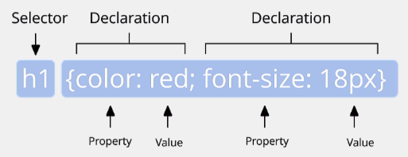

CSS
CSS regler
En CSS regel ger instruktioner till hur någonting ska se ut på webbsajten. Den börjar med valet av selektor, exempelvis en element-selektor med namnet på det elementet man vill påverka i html-koden. Sedan behöver man deklarera vilka ändringar man vill göra inom klammerparenteser: { }, med den egenskapen man vill ändra på och dess nya värde. Det går att läggar till flera deklarationer samtidigt genom att separera dem med semikolon, så som i bildexemplet nedan. Det som ligger inom klammerparenteserna kallas för deklarationsblock. Så länge man håller sig inom deklarationsblocket kan antingen ha de enskilda deklarationerna på varsin rad eller alla på en och samma.
Kaskaden
Det är vanligt att flera stilregler råkar påverka samma element på webbsidan. Eftersom koden läses av uppifrån och ned, blir då den senaste regeln den som sedan syns på sidan. Däremot går det att påverka detta genom prioritering eller typen av selektor. Ju mer specifik selektorn är desto mer företräde har den. Ett id har exempelvis företräde framför ett element.
För att ignorera alla andra satta regler går det att sätta en viss regel på topp-prioritet genom att avsluta regeln med !important. Utöver det så ser piroritetslistan ut såhär:
- Vad användaren har satt som !important.
- Vad kod-författaren har satt som !important.
- Kod-författarens stilmall.
- Användarens eventuella stilmall.
- Webbläsarens egna standard-stilmall.